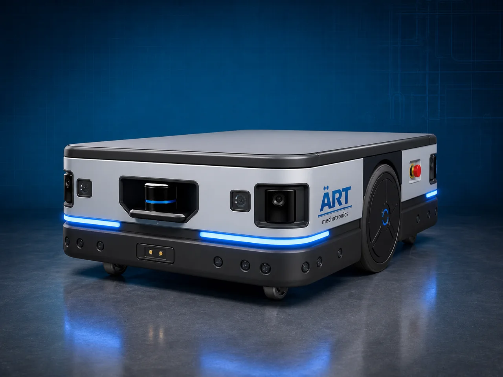

Autonomous Mobile Robot – AMR Machine (Industrial Intelligent Material Handling & Smart Factory Automation System)
An Autonomous Mobile Robot (AMR) Machine, also known as an Industrial AMR System or Intelligent Mobile Robot, is an advanced robotic automation solution designed for autonomous material transportation, warehouse automation, smart factory logistics, pallet movement, production line supply, and…

About the Autonomous Mobile Robot - Amr (AMR)
AMR systems are widely used for: ✔ Intelligent material transportation ✔ Smart warehouse automation ✔ Flexible factory logistics ✔ Autonomous pallet movement ✔ Production line automation ✔ Industry 4.0 integration
The machine improves: ✔ Industrial productivity ✔ Material handling efficiency ✔ Operational flexibility ✔ Labor reduction ✔ Workplace safety ✔ Automation scalability
Unlike traditional AGV systems, AMRs use: ✔ AI-based navigation ✔ LiDAR mapping technology ✔ Vision and sensor systems ✔ Dynamic path planning ✔ Autonomous obstacle avoidance
to move independently and intelligently without fixed tracks or predefined routes.
Autonomous Mobile Robot systems are widely used in industries such as:
Manufacturing industries
Warehousing & logistics
E-commerce fulfillment centers
Pharmaceutical industries
Automobile industries
Electronics industries
Food processing industries
Smart factory facilities
where intelligent autonomous logistics and flexible automation are essential.
The machine is highly suitable for: ✔ Smart warehouse automation ✔ Autonomous pallet transportation ✔ Factory material movement ✔ Robotic logistics systems ✔ Automated production support ✔ Intelligent industrial operations
ART Mechatronics offers high-performance AMR machines, engineered for Industry 4.0 automation, intelligent navigation, autonomous operation, and reliable long-term industrial performance.
Working Principle of Amr Machine
AMR receives task commands from: ✔ Warehouse management system (WMS) ✔ ERP software ✔ PLC automation systems ✔ Smart factory control software
AMR creates real-time environment mapping using: ✔ LiDAR sensors ✔ Cameras ✔ AI algorithms ✔ SLAM technology (Simultaneous Localization & Mapping)
Robot navigates autonomously without fixed guidance paths.
Machine transports: ✔ Pallets ✔ Cartons ✔ Containers ✔ Raw materials ✔ Industrial products ✔ Warehouse inventory between different factory and warehouse locations automatically.
AMR detects: Workers Vehicles Obstacles Changing pathways and reroutes automatically for safe operation.
AMR integrates with: Conveyor systems Robotic arms ASRS systems ERP software Warehouse automation systems
Robot automatically moves to charging station when battery level is low and resumes operation independently
Types of Autonomous Mobile Robot
MACHINES
- 1. Pallet Transport AMR
Designed for: ✔ Autonomous pallet movement systems
- 2. Warehouse AMR
Suitable for: ✔ Smart warehouse material handling automation
- 3. Tugger AMR
Uses: ✔ Autonomous towing and cart pulling systems
- 4. Heavy Duty AMR
Designed for: ✔ Large industrial load transportation applications
- 5. Collaborative AMR
Suitable for: ✔ Human-robot collaborative industrial environments
- 6. Smart Logistics AMR
Designed for: ✔ AI-powered logistics and distribution automation systems
Industries Using Amr Machines
🚚 Warehousing & Logistics Industry Smart warehouse automation systems 🏭 Manufacturing Industry Autonomous production material transportation systems 🛒 E-Commerce Industry Fulfillment center automation and inventory movement systems 🚗 Automobile Industry Component logistics and assembly line supply systems 💊 Pharmaceutical Industry Hygienic automated material transfer systems 💻 Electronics Industry Precision component transportation systems 🍃 Food Processing Industry Automated product movement systems 🏢 Smart Factory Industry Industry 4.0 intelligent logistics systems
Features & Advantages
✔ Fully autonomous intelligent navigation system ✔ No fixed tracks or magnetic strips required ✔ Dynamic obstacle detection and avoidance ✔ Smart AI-based route optimization ✔ Continuous industrial operation ✔ Reduces labor and forklift dependency ✔ Improves warehouse and production efficiency ✔ Easy integration with smart factory automation systems ✔ Energy-efficient battery-powered operation
Technical Highlights
Navigation Technology: LiDAR navigation AI-based SLAM mapping Vision navigation systems Autonomous route planning Load Capacity: Light-duty to heavy-duty AMR systems Drive System: Battery-powered electric drive Safety Features: 360° obstacle detection Collision avoidance systems Emergency stop systems Automation Integration: WMS integration ERP integration PLC automation systems Operation: Fully autonomous smart operation
Turnkey Amr Automation Solutions
ART Mechatronics offers: Complete AMR automation systems Smart warehouse integration solutions Autonomous logistics automation systems Conveyor and robotic integration solutions Installation & commissioning After-sales service & AMC
Why Choose Art Mechatronics
Expertise in smart factory and industrial automation systems Customized AMR solutions for multiple industries High-performance AI-powered automation systems Advanced robotics and intelligent navigation integration Proven Industry 4.0 automation performance across sectors
Applications
Warehousing & Logistics Centers Manufacturing Plants E-Commerce Fulfillment Centers Automobile Industries Pharmaceutical Manufacturing Units Smart Factory Facilities
Related Automation & Robotics machines
Get pricing & specs for the Autonomous Mobile Robot - Amr (AMR)
Share the product, target capacity, current process and plant location. These details help our engineers discuss the right machine or line configuration.
One partner, from design to start-up
ART Mechatronics designs, manufactures, installs and commissions your Autonomous Mobile Robot - Amr (AMR) solution with regional presence in India, UAE and Thailand.